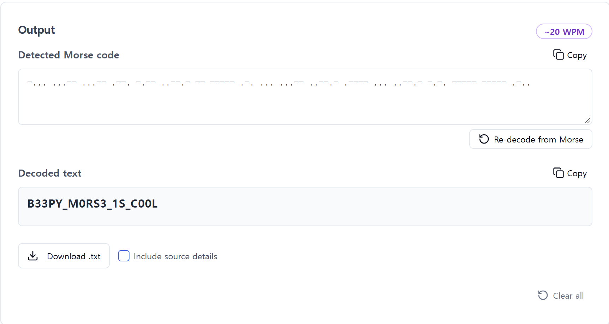

Starting from the Challenge
audio.wav sounds like Morse code made from repeated beeps at a constant pitch. Because the pitch stays almost the same while the duration changes, I treated it as a Morse-code audio file and decoded it with a Morse-code conversion website.
1. Decoding the beeps as Morse code

On Morse Code Audio Decoder – Translate Morse Code Sound to Text | ConvertText.app, I selected Upload File and added audio.wav. I left Detection sensitivity at its default value of 40%, and the decoded text was:
B33PY_M0RS3_1S_C00L
I placed this string inside the challenge's InIt{...} flag format.
Final Flag
InIt{B33PY_M0RS3_1S_C00L}
Summary
- Audio clue: The tone keeps one pitch but changes duration, matching Morse-code timing.
- Decoder: Uploading
audio.wavto the Morse audio decoder returnsB33PY_M0RS3_1S_C00L. - Format: Place the decoded text inside
InIt{...}.
TACTICAL FLOW MAP
- audio.wav
- Morse audio decoder
- B33PY_M0RS3_1S_C00L
- Wrap with InIt{ } → flag
// END OF WRITE UP← Misc write ups